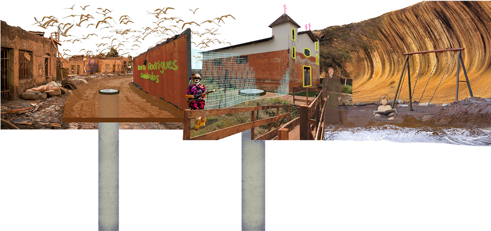
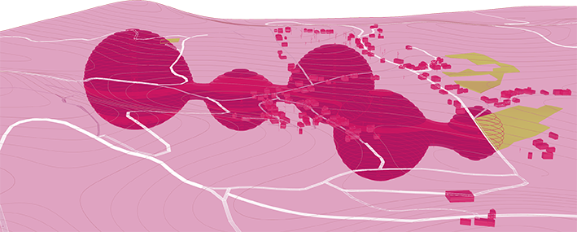
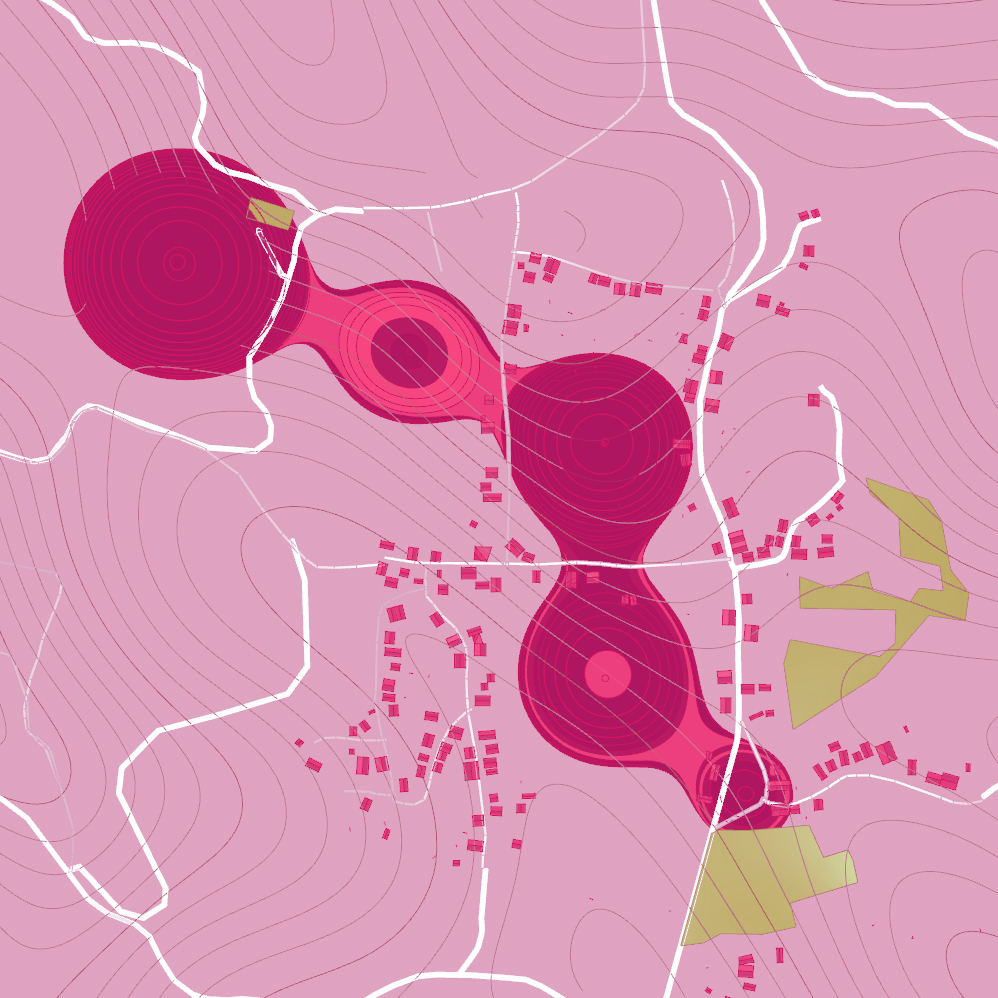
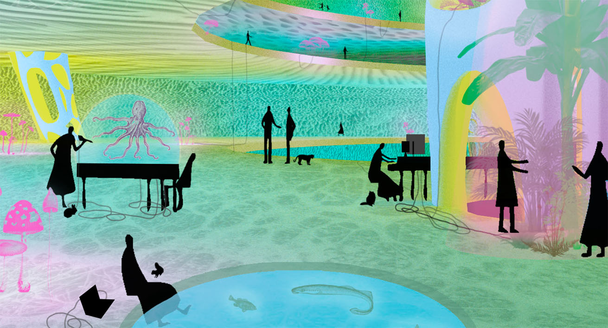
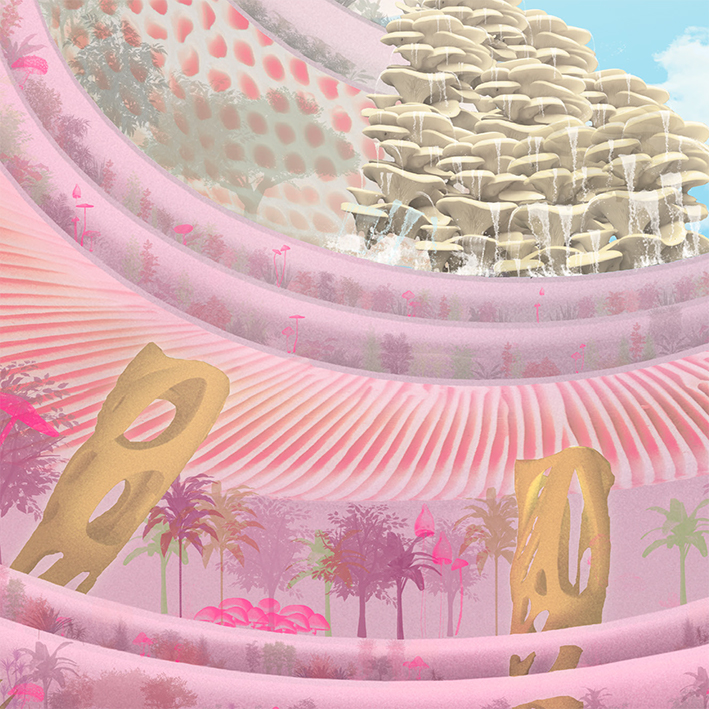
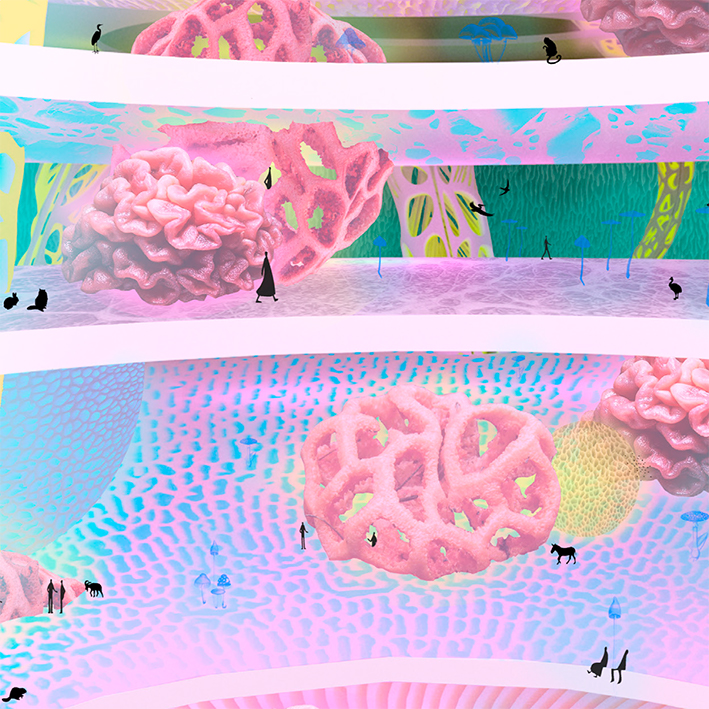

This project was conducted as an investigation of manners to tell the history of our time, the Anthropocene, trough architecture. The chosen intervention site was Bento Rodrigues, a small Brazilian town flooded by 40 million liters of mining waste mud, due to the rupture of two commercial ore tailings dams in 2015.
Looking through the global economics’ perspective, Bento Rodrigues ceases to be seen as an untypical disaster and shows itself as a stress peak of an intrinsically tense system. Its future-fossil character (an industrial post-Armageddon preview), however, gives the land a symbolic power to inspire new forms of world-making as alternatives to the present line of progressive devastation. But which world shall be prototyped in the wreckage of future?
which world shall be prototyped in the wreckage of the future?
Imagining the human since the rise of capitalism entangles us with ideas of progress and with the spread of techniques of alienation that turn both humans and other beings into resources. Such techniques have segregated humans and policed identities, obscuring collaborative survival. The concept of the Anthropocene both evokes this bundle of aspirations, which one might call the modern human conceit, and raises the hope that we might muddle beyond it. Can we live inside this regime of the human and still exceed it?” (Anna Tsing, ‘The Mushroom at the End of the World: On the Possibility of Life in Capitalist Ruins’)
Donna Haraway tells us about the need to overcome the Anthropocene by breaking up with the anthropocentric worldview. The recognition of our unchangeable symbiotic state – dependence between species – would make us able to create sympoietic lifestyles, formed mutually by great diversity.
My intervention is a sympoietic complex created by activists and ex-inhabitants, humans and non-humans, of the areas affected by all the dam collapses happened in Minas Gerais state – and other bodies affected by capital caused disasters –, subverting the meaning of Bento Rodrigues’ territory.

The complex locates itself mostly underground, as a reverse necropolis, preserving the history of Bento Rodrigues in its physical and symbolic dimensions. I state that only the constant presence of its past makes the intention of posterior occupation valid.
I composed this future scenario with references to nowadays avant-garde researches, which I see as able to materialize the hope of post-human societies. Farming in low-light interior spaces, Internet of Beings and biodigital systems are broadly depicted, with fungus as its main medium (bothe as an exploration of its biological characteristics and as a homage to Anna Tsing’s ‘The Mushroom in the End of the World’).






It matters what matters we use to think other matters with; it matters what stories we tell to tell other stories with; it matters what knots knot knots, what thoughts think thoughts, what descriptions describe descriptions, what ties tie ties. It matters what stories make worlds, what worlds make stories.” (Donna Haraway, ‘Staying with the Trouble: making kin in the Chtulucene’)